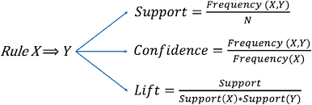

Association Rule Mining (ARM) is a process by which data scientists and analysts search through data to find items that frequently end up associated with one another. This type of machine learning algorithm is most frequently used for transactions specifically (where the term transactional data is also derived from) such as when a customer purchases goods. It is not unique to transactions, as seen below, and can provide insight into how features interact with one another in a dataset. Transactional datasets themselves are datasets that are entirely unlabeled and each row represents a grouping of transactions. From here association rule mining can begin. The process of ARM is quite straightforward, using a basic threshold one repetitvely searches through the data to see which items appear more frequently than said threshold. All other items are then removed from the next search and the process continues until the last item or group of items no longer is above the minimum threshold. These groups of items in association rule mining are called rules. This process is called pruning (similar to pruning ripe fruit from a tree where ripe fruit is picked leaving the new fruit to grow) and is displayed below. Said image is sourced from Medium.com Said algorithm is formally named Apriori and is the more common method of implementing ARM.
The threshold used is called the support and represents the probability that an item appears within the dataset. It is calculated by taking the number of times said item appears divided by the total number of items. Confidence, another metric used for measuring frequency of itemsets within a transaction database, helps to order and associate the items by measuring the probability an item appears with one another given that the first item is involved in the transaction. It is calculated by taking the total number of transactions that contain both the original and new item and dividing by the total number of transactions containing the original item. The last metric used within ARM is lift and is the more confusing fo the three to originally understand. Lift is a measure of strength, that is how strongly associated is one rule to the itemsets themselves. The greater the lift, the stronger an association is within the dataset and thus is more likely to appear, Lift is calculated by dividing the confidence of a rule by its support. Each of these equations is displayed below and is sourced from Research Gate
The largest issue in prepping data for this project was the need to mimic transactional data using the overall census dataset. To do this categorical variables were one hot encoding in accordance to the needs of mlxtend, the package used for Apriori and Association Rule Mining. Prior to this though, the proper columns needed to be selected. For transactional data, no labels may exist, and no quantities can be used. Since that original dataset used (displayed below as the raw data sourced from the EDA tab) is a mixed dataset, all of the quatitative features needed to be dropped in the same vein that categorical features needed to be dropped for PCA and Clustering. This immediately reduced the dimensionality by half. From there, the most full features were used, that is the features that displayed the fewest instances of not being in universe of the category or not applicable to the individual. This left 7 major columns to be remapped and used: job industry, highest education, sex, age (coded into groupings), health insurance coverage last year, marital status, and the state an individual was from. Lastly, all instances/rows where an item was found to have a not applicable or a not in universe was dropped entirely. Then, one hot encoding could be used prior to implementing Apriori from mlextend. The raw dataset is displayed first followed by the newly cleaned, transactional dataset. In this case the "transactions" are similar to that of character creation where one transaction represents a feature of a person. Each item can only appear once and various combinations make up the person. This exactly mimics the rules for a transactional dataset aside from one fact, each individual must purchase the same number of items so to say.
| age | job_industry_recode | school_enroll_lastweek | employment | fam_size | ... | fam_otc_med_costs | fam_rent_val | fips | state | state.1 | |
|---|---|---|---|---|---|---|---|---|---|---|---|
| 1 | 67 | Not in universe, or children | Not in univ. or children & Armed Forces | 0 | 0 | ... | 0 | 0 | ME | 4 | 23 |
| 2 | 74 | Not in universe, or children | Not in univ. or children & Armed Forces | 0 | 0 | ... | 60 | 0 | ME | 4 | 23 |
| 3 | 66 | Not in universe, or children | Not in univ. or children & Armed Forces | 0 | 1 | ... | 0 | 0 | ME | 3 | 23 |
| 4 | 68 | Not in universe, or children | Not in univ. or children & Armed Forces | 0 | 1 | ... | 0 | 0 | ME | 3 | 23 |
| 5 | 52 | Not in universe, or children | No | 0 | 1 | ... | 0 | 0 | ME | 3 | 23 |
5 rows × 38 columns
| job_industry_recode_Architecture and engineering occupations | job_industry_recode_Armed Forces | job_industry_recode_Arts, design, entertainment, sports, and media occupations | job_industry_recode_Building and grounds cleaning and maintenance occupations | job_industry_recode_Business and financial operations occupations | ... | marital_status_Marr-civ sp present | marital_status_Marr-spouse absent | marital_status_Never married | marital_status_Separated | marital_status_Widowed | |
|---|---|---|---|---|---|---|---|---|---|---|---|
| 6 | 0 | 0 | 0 | 0 | 0 | ... | 1 | 0 | 0 | 0 | 0 |
| 10 | 0 | 0 | 0 | 0 | 0 | ... | 0 | 0 | 1 | 0 | 0 |
| 12 | 0 | 0 | 0 | 0 | 0 | ... | 0 | 0 | 1 | 0 | 0 |
| 29 | 0 | 0 | 0 | 0 | 0 | ... | 1 | 0 | 0 | 0 | 0 |
| 30 | 0 | 0 | 0 | 0 | 0 | ... | 1 | 0 | 0 | 0 | 0 |
5 rows × 112 columns
Below are 3 figures to demonstrate the top 15 support, confidence, and lifts for the rules discovered within the dataset. The first column, the antecedent, represents the rule (whether it be a single item or group of items), that associates with the consequent it goes with (the new item in the ruleset). The following column corresponds to the lift, the support, and the confidence sorted from greatest to least. Lastly, a scatterplot for each of the consequents is displayed to show the relation of the lift and the confidence for each item based on a ruleset to give an idea of the importance of each group of consequents within the dataset. It is noted that while the consequents of each of the 3 tables all have high similarity (stemming from the need to use a low minimum support threshold such that sufficient rules could be discovered), the antecedents were where many conculsions about the dataset were made. This comes from the fact that many of the antecedents are unique or have multiple items in them and give way to substantial groupings within the dataset that gives way to potential future questions and insights into how these individuals separate themselves from the rest.
| antecedents | consequents | support | |
|---|---|---|---|
| 46 | (marital_status_Marr-civ sp present) | (health_insurance_ly_Coverage for all of year) | 0.461555 |
| 24 | (sex_Male) | (health_insurance_ly_Coverage for all of year) | 0.436958 |
| 23 | (sex_Female) | (health_insurance_ly_Coverage for all of year) | 0.428082 |
| 47 | (marital_status_Never married) | (health_insurance_ly_Coverage for all of year) | 0.309207 |
| 148 | (sex_Male, marital_status_Marr-civ sp present) | (health_insurance_ly_Coverage for all of year) | 0.242134 |
| 18 | (highest_education_Bachelor's degree (BA,AB,BS)) | (health_insurance_ly_Coverage for all of year) | 0.230252 |
| 138 | (sex_Female, marital_status_Marr-civ sp present) | (health_insurance_ly_Coverage for all of year) | 0.219421 |
| 20 | (highest_education_High school graduate-high school diploma) | (health_insurance_ly_Coverage for all of year) | 0.208281 |
| 139 | (marital_status_Never married, sex_Female) | (health_insurance_ly_Coverage for all of year) | 0.150211 |
| 109 | (highest_education_Bachelor's degree (BA,AB,BS), marital_status_Marr-civ sp present) | (health_insurance_ly_Coverage for all of year) | 0.140321 |
| 35 | (age_recode_gt15_40 to 44 years) | (health_insurance_ly_Coverage for all of year) | 0.137025 |
| 34 | (age_recode_gt15_35 to 39 years) | (health_insurance_ly_Coverage for all of year) | 0.133909 |
| 22 | (highest_education_Some College But No Degree) | (health_insurance_ly_Coverage for all of year) | 0.129780 |
| 33 | (age_recode_gt15_30 to 34 years) | (health_insurance_ly_Coverage for all of year) | 0.125559 |
| 36 | (age_recode_gt15_45 to 49 years) | (health_insurance_ly_Coverage for all of year) | 0.121955 |
| antecedents | consequents | lift | |
|---|---|---|---|
| 151 | (age_recode_gt15_18 and 19 years) | (marital_status_Never married, health_insurance_ly_Coverage for all of year) | 2.753880 |
| 25 | (age_recode_gt15_16 and 17 years) | (marital_status_Never married) | 2.594196 |
| 150 | (age_recode_gt15_18 and 19 years, health_insurance_ly_Coverage for all of year) | (marital_status_Never married) | 2.592506 |
| 27 | (age_recode_gt15_18 and 19 years) | (marital_status_Never married) | 2.591455 |
| 153 | (health_insurance_ly_Coverage for all of year, age_recode_gt15_20 and 21 years) | (marital_status_Never married) | 2.504456 |
| 29 | (age_recode_gt15_20 and 21 years) | (marital_status_Never married) | 2.490214 |
| 207 | (age_recode_gt15_22 to 24 years, sex_Male, health_insurance_ly_Coverage for all of year) | (marital_status_Never married) | 2.329041 |
| 140 | (age_recode_gt15_22 to 24 years, sex_Male) | (marital_status_Never married) | 2.323990 |
| 155 | (age_recode_gt15_22 to 24 years, health_insurance_ly_Coverage for all of year) | (marital_status_Never married) | 2.297858 |
| 31 | (age_recode_gt15_22 to 24 years) | (marital_status_Never married) | 2.286676 |
| 199 | (age_recode_gt15_22 to 24 years, sex_Female, health_insurance_ly_Coverage for all of year) | (marital_status_Never married) | 2.266194 |
| 129 | (age_recode_gt15_22 to 24 years, sex_Female) | (marital_status_Never married) | 2.246178 |
| 54 | (job_industry_recode_Construction and extraction occupations, highest_education_High school graduate-high school diploma) | (sex_Male) | 1.858968 |
| 168 | (job_industry_recode_Construction and extraction occupations, marital_status_Marr-civ sp present, health_insurance_ly_Coverage for all of year) | (sex_Male) | 1.853528 |
| 56 | (job_industry_recode_Construction and extraction occupations, marital_status_Marr-civ sp present) | (sex_Male) | 1.852405 |
| antecedents | consequents | confidence | |
|---|---|---|---|
| 25 | (age_recode_gt15_16 and 17 years) | (marital_status_Never married) | 0.977411 |
| 150 | (age_recode_gt15_18 and 19 years, health_insurance_ly_Coverage for all of year) | (marital_status_Never married) | 0.976774 |
| 27 | (age_recode_gt15_18 and 19 years) | (marital_status_Never married) | 0.976378 |
| 59 | (job_industry_recode_Education, training, and library occupations, highest_education_Master's degree (MA,MS,MENG,MED,MSW,MBA)) | (health_insurance_ly_Coverage for all of year) | 0.970079 |
| 192 | (highest_education_Master's degree (MA,MS,MENG,MED,MSW,MBA), sex_Female, marital_status_Marr-civ sp present) | (health_insurance_ly_Coverage for all of year) | 0.967755 |
| 51 | (job_industry_recode_Business and financial operations occupations, marital_status_Marr-civ sp present) | (health_insurance_ly_Coverage for all of year) | 0.967688 |
| 122 | (highest_education_Master's degree (MA,MS,MENG,MED,MSW,MBA), marital_status_Marr-civ sp present) | (health_insurance_ly_Coverage for all of year) | 0.964974 |
| 169 | (job_industry_recode_Education, training, and library occupations, sex_Female, marital_status_Marr-civ sp present) | (health_insurance_ly_Coverage for all of year) | 0.964393 |
| 188 | (highest_education_Bachelor's degree (BA,AB,BS), marital_status_Marr-civ sp present, age_recode_gt15_50 to 54 years) | (health_insurance_ly_Coverage for all of year) | 0.964055 |
| 53 | (job_industry_recode_Computer and mathematical science occupations, marital_status_Marr-civ sp present) | (health_insurance_ly_Coverage for all of year) | 0.963515 |
| 54 | (job_industry_recode_Construction and extraction occupations, highest_education_High school graduate-high school diploma) | (sex_Male) | 0.962532 |
| 172 | (job_industry_recode_Management occupations, highest_education_Bachelor's degree (BA,AB,BS), marital_status_Marr-civ sp present) | (health_insurance_ly_Coverage for all of year) | 0.962372 |
| 187 | (highest_education_Bachelor's degree (BA,AB,BS), marital_status_Marr-civ sp present, age_recode_gt15_45 to 49 years) | (health_insurance_ly_Coverage for all of year) | 0.962162 |
| 170 | (job_industry_recode_Healthcare practitioner and technical occupations, sex_Female, marital_status_Marr-civ sp present) | (health_insurance_ly_Coverage for all of year) | 0.961607 |
| 193 | (sex_Male, highest_education_Master's degree (MA,MS,MENG,MED,MSW,MBA), marital_status_Marr-civ sp present) | (health_insurance_ly_Coverage for all of year) | 0.961415 |
There are a few substantial conclusions that come from Association Rule Mining for the sake fo this data and potential questions. The first comes from the high presence of total health coverage last year in the dataset. All instances where people where not in universe or did not apply to the above were dropped, and, in the case of association rule mining, if every item has the same item in a ruleset, it is no longer important and is thus no longer recorderd. As such this pushes insights into the individuals who did NOT have health insurance last year and what their characteristics are that may have pushed them to lack such an important service. For the sake of the question at large, how can net utility be improved, pursuing this topic can allow for suggestionsto be made to target said individuals and subsidize healthcare to improve the health of the population at large. Additionally, looking to the antecedents for each of these, but most significantly the confidence, each of the individuals that was most confident to maintain coverage all came from high paying jobs, were highly educated, or both. This begs the question of the importance of education. If it is the case that uneducated people are less likely to maintain health coverage, then it is highly likely that providing a space with easier access to education (or access to better education) may improve the overall health of the average person. Lastly, amongst the antcedents, many of the rules feature marriage with spouse present as a substantial element. This was originally a topic that was overlooked in the data, but provides insight into why these individuals may be more successful and will need to be pursued further. Based on the above ARM, initial insights lead to the belief that marriage with a spouse present may bring greater income into the home or provide more opportunities to attain healthcare (more workign individuals to be covered by an employer). Each of these conclusions lead to further questions that may well help to improve net utility in the United States.